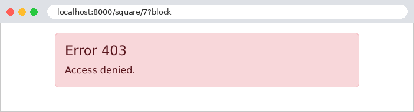
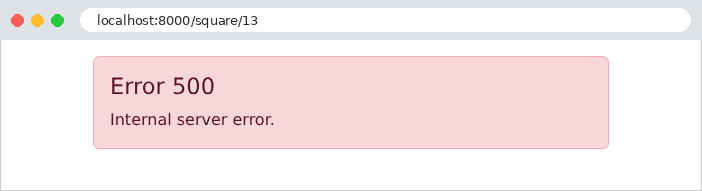

7. Der Lebenszyklus einer Anfrage
Zwischen dem Eintreffen einer Anfrage und dem Versand ihrer Antwort durchläuft [Django] mehrere Schritte, und die Anwendung kann bei jedem eingreifen. Mehrere dieser Eingriffspunkte sind uns bereits begegnet: die Middleware-Komponenten und ihre Methode [__call__] (Beispiele 03, 12, 16, 23), ihre Methoden [process_exception] (Beispiele 08 und 12) und [process_view] (Beispiel 21) sowie die Route-Konverter (Beispiel 12). Dieses Kapitel fasst sie in einem einzigen Beispiel zusammen, das bei jedem Schritt eine Meldung in der Konsole ausgibt, sodass die Reihenfolge beobachtet werden kann:
-
- das Signal [request_started]: Die Anfrage ist gerade eingetroffen. Ein Signal ist eine Benachrichtigung, die [Django] zu einem bestimmten Zeitpunkt aussendet und die Funktionen der Anwendung – die Empfänger – empfangen können. Sie können nicht auf die Anfrage einwirken: Sie werden lediglich benachrichtigt;
-
- Die Methode [__call__] der Middleware-Komponenten vor dem Aufruf von [get_response]: Die Middleware-Komponenten werden in der Reihenfolge verarbeitet, die die Konfiguration [MIDDLEWARE] vorgibt. Das Routing hat noch nicht stattgefunden: Eine Middleware weiß noch nicht, welche View die Anfrage bearbeiten wird. Sie kann auch selbst antworten, ohne den Rest der Kette aufzurufen: In diesem Fall werden weder die nachfolgenden Middleware-Komponenten noch die View aufgerufen;
-
- Routing: Sobald alle Middleware-Komponenten durchlaufen sind, sucht [Django] die Route, die zum angeforderten Pfad passt (Beispiel 02); die Konverter für Routenparameter (Beispiel 12) werden zu diesem Zeitpunkt aufgerufen. Passt keine Route, wird eine Ausnahme [Http404] (404) ausgelöst;
- 3 und 4. Die Methode [process_view] der Middleware-Komponenten in der angegebenen Reihenfolge: Die View wurde ausgewählt, aber noch nicht aufgerufen. Eine Middleware kennt dann die View und ihre Parameter; sie kann den Ablauf fortsetzen lassen ([None] zurückgeben), anstelle der View antworten oder eine Ausnahme auslösen;
-
- die View und das Template, das sie erzeugt;
- x. Die Middleware-Methode [process_exception] , falls die View eine Ausnahme ausgelöst hat, in der umgekehrten Reihenfolge der Konfiguration. Die erste, die eine Antwort liefert, beendet die Suche. Liefert keine eine Antwort, erzeugt [Django] die Fehlerantwort selbst: seine ausführliche Seite im Debug-Modus oder die Fehlerseite der Anwendung, bereitgestellt von den Views [handler400], [handler403], [handler404], und [handler500] (siehe unten). Eine Ausnahme, die an anderer Stelle ausgelöst wird (im [__call__] oder [process_view] einer Middleware-Komponente oder im Routing), durchläuft [process_exception] nicht: [Django] wandelt sie beim Verlassen der betreffenden Middleware in eine Fehlerantwort um;
- 6 und 7. Die Methode [__call__] der Middleware-Komponenten nach dem Aufruf von [get_response], in der umgekehrten Reihenfolge der Konfiguration: Die Antwort ist fertig, und jede Middleware-Komponente kann sie verändern (einen Header, ein Cookie hinzufügen);
-
- Das Signal [request_finished], gesendet, nachdem die Antwort an den Browser geschickt wurde. Die Empfänger können die Antwort nicht mehr verändern: Sie dienen Aufgaben, die warten können (etwa dem Schließen von Datenbankverbindungen, was [Django] selbst tut), ohne den Benutzer warten zu lassen.
Das entspricht den Filtern von [Java] und den Interceptoren von [Spring MVC], den Action-Filtern von [ASP.NET Core MVC] und den Funktionen [before_request] / [after_request] von [Flask], der Middleware in [Laravel] und den Event-Listenern in [Symfony]. Im Vergleich dazu liegt der Unterschied in der Struktur: Eine Middleware-Komponente kapselt die restliche Verarbeitung (sie ruft [get_response] auf und sieht daher die Anfrage davor und die Antwort danach, im selben Code, wie die russischen Matrjoschka-Puppen in Beispiel 03), während ein Event-Listener auf ein Ereignis reagiert und man zwei Ereignisse – eines vor und eines nach der Aktion – abonnieren muss, um einzugreifen. Die Reihenfolge der Middleware-Komponenten folgt dagegen der Liste in der Konfiguration [MIDDLEWARE] und nicht einer numerischen Abfolge: Das ist leichter lesbar, aber man muss die Reihenfolgebeschränkungen für Middleware-Komponenten in [Django] kennen (zum Beispiel die Session vor der Authentifizierung; wie in der [Django]-Dokumentation angegeben).
7.1. Beispiel 24: Die Schritte bei der Verarbeitung einer Anfrage
Die Anwendung hat nur eine View, die das Quadrat einer ganzen Zahl berechnet: [/square/7]. Je nach URL ist sie erfolgreich oder scheitert auf verschiedene Weise. Die Meldungen werden von einer kleinen Funktion in die Serverkonsole geschrieben:
Standardmäßig schreibt [print] in die Standardausgabe; der Parameter [file=sys.stderr] leitet sie auf die Fehlerausgabe um, auf die auch [Django] seine eigenen Meldungen schreibt: Beide werden daher in der Reihenfolge angezeigt, in der sie erzeugt werden. (Eine reale Anwendung würde das Modul [logging] von [Python] verwenden, das [Django] über seine Einstellung [LOGGING] konfiguriert: Die Fallstudie tut dies.)
7.1.1. Die Konfiguration: config/settings.py
- Zeile 9: [ALLOWED_HOSTS] ist gefüllt, damit das Beispiel in der Produktion bereitgestellt ([DEBUG = False]) und die Fehlerseiten der Anwendung angezeigt werden können (siehe unten);
- Zeilen 23–28: vier Middleware-Komponenten, in der Reihenfolge, in der die Anfrage sie durchläuft.
7.1.2. Vor und nach allem anderen: die Signale
- Zeile 3: die beiden Signale von [Django] , die jede Anfrage einrahmen;
- Zeilen 12–15: Der Dekorator [@receiver] hängt die Funktion [start] an das Signal [request_started] an: Sie wird jedes Mal aufgerufen, wenn das Signal ausgesendet wird. Ein Empfänger erhält den Absender des Signals ([sender]), gefolgt von benannten Parametern, die für jedes Signal spezifisch sind; [**kwargs] sammelt die nicht benannten, wie es die Dokumentation von [Django] verlangt (ein Signal kann in einer künftigen Version neue Parameter erhalten). [request_started] liefert [environ], das WSGI-Dictionary der Anfrage (Beispiel 01): Das Objekt [HttpRequest] existiert noch nicht. Der Empfänger zeigt die Methode und den Pfad an, gefolgt von der Meldung Nr. 0;
- Zeilen 20–25: Meldung Nr. 8, wenn alles abgeschlossen ist, mit der vom Timer gemessenen Dauer (siehe unten), sofern die Messung gestartet wurde.
[Django] sendet weitere Signale: vor und nach dem Speichern eines Modells durch das ORM ([pre_save], [post_save]), wenn sich ein Benutzer anmeldet ([user_logged_in]) ... und die Anwendung kann eigene definieren. Ein Empfänger muss beim Start der Anwendung registriert werden, vor der ersten Anfrage. Der dafür vorgesehene Ort ist die Konfiguration der Anwendung:
- Zeilen 6–7: Die Konfiguration einer Anwendung ist eine Klasse, die von [AppConfig] erbt, üblicherweise im Modul [apps.py] der Anwendung liegt und die [Django] selbst findet. [name] ist der Name des Anwendungspakets. Hier würde man der Anwendung auch einen lesbaren Namen geben ([verbose_name]);
- Zeilen 11–12: [Django] ruft die Methode [ready] einmal beim Start auf, wenn alle Anwendungen geladen sind. Dort genügt es, das Modul [signals] zu importieren: Seine Dekoratoren [@receiver] hängen die Empfänger bei ihrer Ausführung an. Der Import erfolgt innerhalb der Methode und nicht am Anfang der Datei, weil ein Modul, das die Modelle des ORM verwendet, erst importiert werden kann, wenn die Anwendungen geladen sind. Der Kommentar [# noqa: F401] weist Codeprüfwerkzeuge an, einen „ungenutzten“ Import nicht zu beanstanden.
7.1.3. Vor und nach der View: die Logger-Middleware
- Zeilen 14–22: die erste Middleware in der Konfiguration: Sie verarbeitet die Anfrage vor allen anderen (Meldung Nr. 1) und die Antwort nach allen anderen (Meldung Nr. 7), zusammen mit ihrem Code ([status_code]). Sie kennt die Route nicht, da das Routing noch nicht stattgefunden hat. Sie dient Verarbeitungen, die für alle Anfragen gelten: Logging, Behandlung eines Proxys (die Fallstudie erwähnt dies im Zusammenhang mit der IP-Adresse der Clients) ...
7.1.4. Routing: calc/converters.py
Ein Route-Konverter (Beispiel 12), der die Meldung Nr. 2 schreibt. Er akzeptiert jedes Segment (der Ausdruck [[^/]+]: ein oder mehrere Zeichen, die keine Schrägstriche sind) und wandelt es in eine ganze Zahl um, oder in [None] , wenn es keine ist: anders als der Konverter [int] (Beispiel 02), der für [/square/abc] eine 404-Seite liefern würde; hier entscheidet die View über das Ergebnis. Die Datei [config/urls.py] registriert ihn als [integer]:
- Zeilen 18–21: die Views der Fehlerseiten, später beschrieben.
7.1.5. Nach dem Routing: die Middleware „Block“
Kehren wir zur Datei [calc/middleware.py] zurück:
- Zeilen 26–39: Die zweite Middleware wirkt nur in ihrer Methode
***[process\_view], nach dem Routing. [request.resolver_match] beschreibt das Ergebnis des Routings (Beispiel 16): den Namen der Route ([url_name]***), die View und ihre Parameter. Meldung Nr. 3; - Zeilen 36–38: Der URL-Parameter [?block] verursacht einen 403-Fehler (Forbidden, Zugriff verweigert): Die Ausnahme [PermissionDenied] unterbricht die Verarbeitung; die nachfolgenden [process_view]s und die View werden nicht aufgerufen.
7.1.6. Vor der View: die Timer-Middleware und der Dekorator @timed
Wir wollen nur bestimmte Views zeitlich messen – diejenigen, die dies anfordern. Dazu genügt es, sie mit einem selbst entworfenen Dekorator zu markieren:
- Zeilen 27–29: ein Dekorator, der die View nicht ersetzt; er fügt ein Attribut [timed] hinzu und gibt sie zurück. In [Python] ist eine Funktion ein Objekt, dem Attribute hinzugefügt werden können. So markiert auch [Django] selbst bestimmte Views: [@csrf_exempt] (Beispiel 18) fügt das Attribut [csrf_exempt] hinzu, das [CsrfViewMiddleware] in ihrer Methode [process_view] liest;
- Zeile 8: Der Zeitstempel muss von [process_view] an das Signal [request_finished] übergeben werden. Der Server bearbeitet jedoch mehrere Anfragen gleichzeitig: Eine gewöhnliche Modulvariable würde von allen gemeinsam genutzt. Ein [threading.local]-Objekt hat Attribute, die für jeden Thread spezifisch sind: Jede Anfrage, die in einem eigenen Thread bearbeitet wird, hat ihre eigene Startzeit;
- Zeilen 11–22: Starten und Stoppen des Timers. [time.perf_counter_ns()] ist eine präzise Uhr in Nanosekunden, die zum Messen von Zeitspannen gedacht ist. [getattr(object, name, default)] gibt das Attribut eines Objekts oder den Standardwert zurück, falls es nicht existiert: Der Timer wurde in diesem Thread möglicherweise nicht gestartet. Die Dauer wird in Millisekunden zurückgegeben.
Die Middleware, die die Markierung liest, in der Datei [calc/middleware.py]:
- Zeilen 55–61: in [process_view]: Enthält die View die Markierung, wird Meldung Nr. 4 gesendet und der Timer startet. Die Markierung wird außerdem für die spätere Verwendung im Request gespeichert. Der Dekorator [@require_GET], der über [@timed] (Datei [calc/views.py]) angewendet wird, entfernt die Markierung nicht: [functools.wraps] (Beispiel 08) kopiert die Attribute der umhüllten Funktion;
- Zeilen 49–53: in [__call__], nach der View, Meldung Nr. 6 mit dem Antwortcode, falls die View zeitlich gemessen wurde.
7.1.7. Die View: calc/views.py
- Zeile 15: Die View wird mit unserem Dekorator [@timed] markiert;
- Zeile 16: Der Parameter [n] wird von unserem Konverter geliefert;
- Zeilen 18–19: ein Parameter, der keine ganze Zahl ist: Fehler 400 (Bad Request), ausgelöst durch die Exception [BadRequest] (Beispiel 07);
- Zeilen 20–21: Die Zahl 13 löst einen „unerwarteten“ Fehler aus, eine [DomainError]-Exception der Anwendung;
- Zeile 22: der Normalfall. Das Template [calc/result.html] zeigt einfach das Ergebnis an.
7.1.8. Fehlerbehandlung: die ErrorPage-Middleware und die Fehler-Views
Die letzte Middleware in der Datei [calc/middleware.py] ersetzt die Fehlerseiten von [Django] durch unsere eigenen, und zwar für Exceptions, die aus der View entweichen:
- Zeile 67: ein Dictionary, dessen Schlüssel Exception-Klassen und dessen Werte die zugehörigen HTTP-Codes sind;
- Zeilen 76–79: [isinstance] (Beispiel 03) prüft, ob die Exception zu einer dieser Klassen (oder zu einer abgeleiteten Klasse) gehört. Ist das der Fall, wird die Meldung Nr. x zusammen mit dem Code angezeigt, und [break] beendet die Schleife;
- Zeilen 80–85: Das [else] einer [for]-Schleife wird ausgeführt, wenn die Schleife ohne ein [break] durchlaufen wurde: Keine der drei Klassen passt. Eine [DomainError]-Exception ist ein „unerwarteter“ Fehler, der in eine „eigene“ Fehlerseite mit dem Statuscode 500 (Internal Server Error) umgewandelt wird. Die Meldung der Exception wird in der Konsole angezeigt, nicht aber auf der Seite: Sie kann interne Details enthalten, die für den Benutzer nicht relevant sind. Andere Exceptions werden von [Django] behandelt ([return None]);
- Zeile 88: die Antwort, die an die Stelle der Exception tritt. Sie durchläuft anschließend die vorhergehenden Middleware-Komponenten ([Timer], dann [Logger]), genau wie eine reguläre Antwort.
Diese Middleware behandelt nur Exceptions, die von der View ausgelöst werden. In den übrigen Fällen (die Exception [PermissionDenied] der Middleware [Block], der 404-Fehler einer URL-Middleware ohne Route) verwendet [Django] die Fehler-Views der Anwendung, die in der Datei [config/urls.py] durch die Variablen [handler400], [handler403], [handler404] und [handler500] (Zeilen 18–21) deklariert und in der Datei [calc/errors.py] geschrieben sind:
- Zeilen 9–10: die Exception der Anwendung: eine Klasse, die von [Exception] erbt, ohne etwas hinzuzufügen ([pass] ist die Anweisung, die nichts tut: Ein Block darf nicht leer sein);
- Zeilen 15–29: Die Fehler-Views erhalten den Request und die Exception (außer der View 500, die nur den Request erhält);
- Zeilen 32–34: dieselbe Fehlerseite für alle, mit dem Fehlercode (Meldung Nr. x).
Es gibt eine Besonderheit: Im Debug-Modus behält [Django] seine ausführlichen Seiten für die Fehler 400, 404 und 500 bei und verwendet diese Views nur für den Fehler 403. Das ist gewollt: Während der Entwicklung ist die ausführliche Seite nützlicher. Außerhalb des Debug-Modus werden alle vier Views verwendet. Ohne diese Views würde [Django] außerhalb des Debug-Modus seine schlichten Seiten (Beispiel 03) oder, falls vorhanden, die Templates der Anwendung mit den Namen [400.html], [403.html], [404.html], und [500.html] verwenden: Das ist ein weiterer, noch einfacherer Weg, die Fehlerseiten zu ersetzen. Die Fehlerseite der Anwendung:
- Zeile 8: DTL kennt kein im Template definiertes Dictionary; die Meldung wird durch eine Folge von [{% elif %}] ausgewählt.
7.1.9. Ausführung
Der Normalfall, [/square/7]:

Die Konsole des Servers zeigt die Schritte der Reihe nach an:
Die Zeile in eckigen Klammern ist das Protokoll des Entwicklungsservers, das nach dem Senden der Antwort geschrieben wird, unmittelbar vor dem Signal [request_finished]. Ein blockierter Zugriff, [/square/7?block]:

Die Middleware [Block] hat in [process_view] eine Exception ausgelöst: Weder das [process_view] von [Timer] noch die View wurden aufgerufen. Die Exception ist nicht durch [process_exception] gelaufen (sie stammt nicht aus der View): [Django] hat sie über die View [handler403] in eine Antwort umgewandelt und sie dann samt ihrem Aufrufstack ins Protokoll geschrieben (eine [PermissionDenied]-Exception ist ein Client-Fehler, den [Django] dennoch auf diese Weise auf der Stufe „warning“ protokolliert). Die Antwort durchlief die zweite Hälfte der Middleware [Logger]. Das Signal [request_finished] wurde ausgelöst, zeigte aber nichts an, da die Messung nicht begonnen hatte. Ein Parameter, der keine ganze Zahl ist, [/square/abc]:

Diesmal wurde die View aufgerufen – [None] –, und sie hat den Fehler 400 ausgelöst; [process_exception] hat ihn als Seite ausgegeben. [Django] hat die Antwort 400 dennoch in seinem Protokoll vermerkt ([Bad Request: /square/abc]). Ein „unerwarteter“ Fehler, [/square/13]:

Die Exception wurde von unserer Middleware behandelt: Der Benutzer sieht die „eigene“ Fehlerseite und nicht die ausführliche Seite, obwohl der Debug-Modus aktiv ist. Zuletzt eine URL, die keiner Route entspricht, [/unknown]:
Das Routing ist fehlgeschlagen: kein [process_view], keine View. Im Debug-Modus ist die 404-Seite die Detailseite von [Django] (Beispiel 02). Schalten wir das Beispiel in den Produktionsmodus um ([DEBUG = False] in der Datei [config/settings.py]); wir müssen den Server dann mit [python manage.py runserver --insecure] starten, damit er weiterhin die statischen Dateien ausliefert (Beispiel 15):
Die 404-Seite ist nun unsere eigene, erzeugt von der View [handler404] (die Konsole zeigt [x. view of the error page 404] an).
Fassen wir die wichtigsten Punkte zusammen. Middleware ist der richtige Ort für Prüfungen, die für viele Views gelten (Ist der Benutzer angemeldet? Hat er die Berechtigung für diese View?), Dekoratoren dagegen für Prüfungen, die nur wenige Views betreffen: Die Authentifizierung wird sich darauf stützen, wie wir im nächsten Kapitel sehen werden. [process_exception] und die Fehler-Views sorgen dafür, dass der Benutzer unabhängig vom Fehler nie eine technische Seite sieht: Die Fallstudie nutzt das.